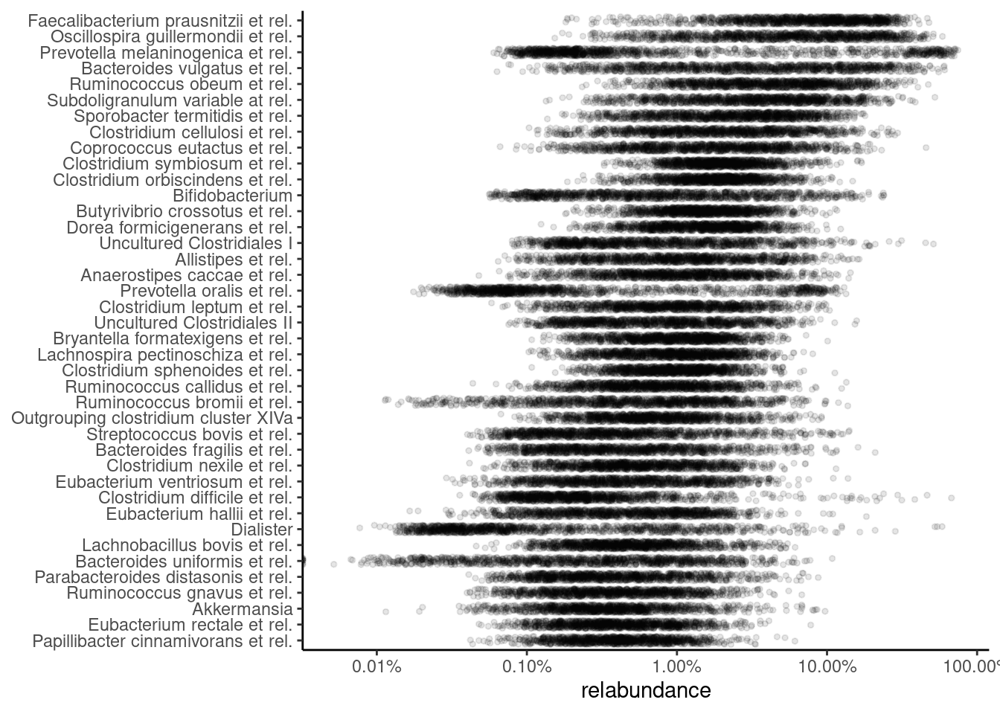
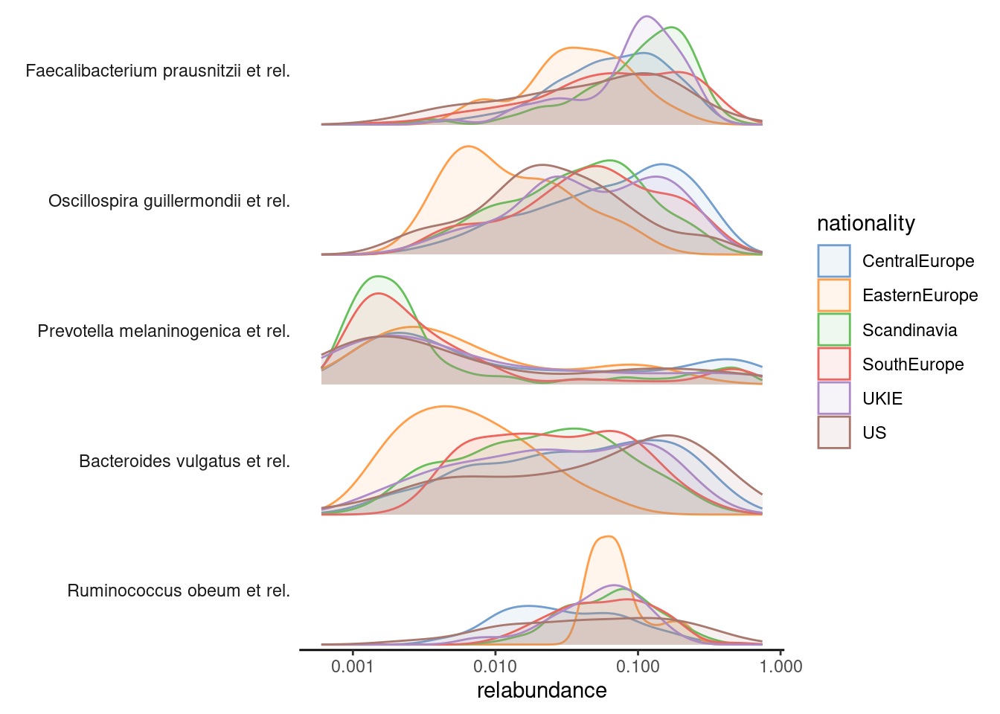
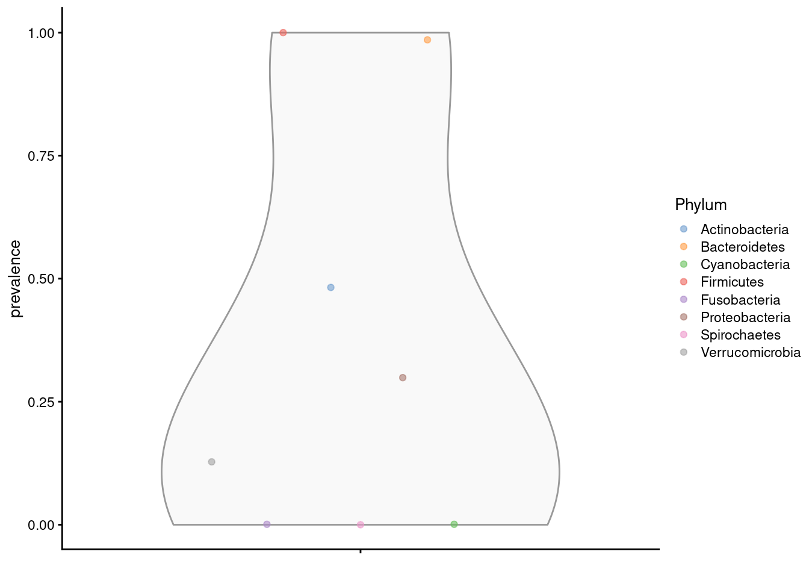
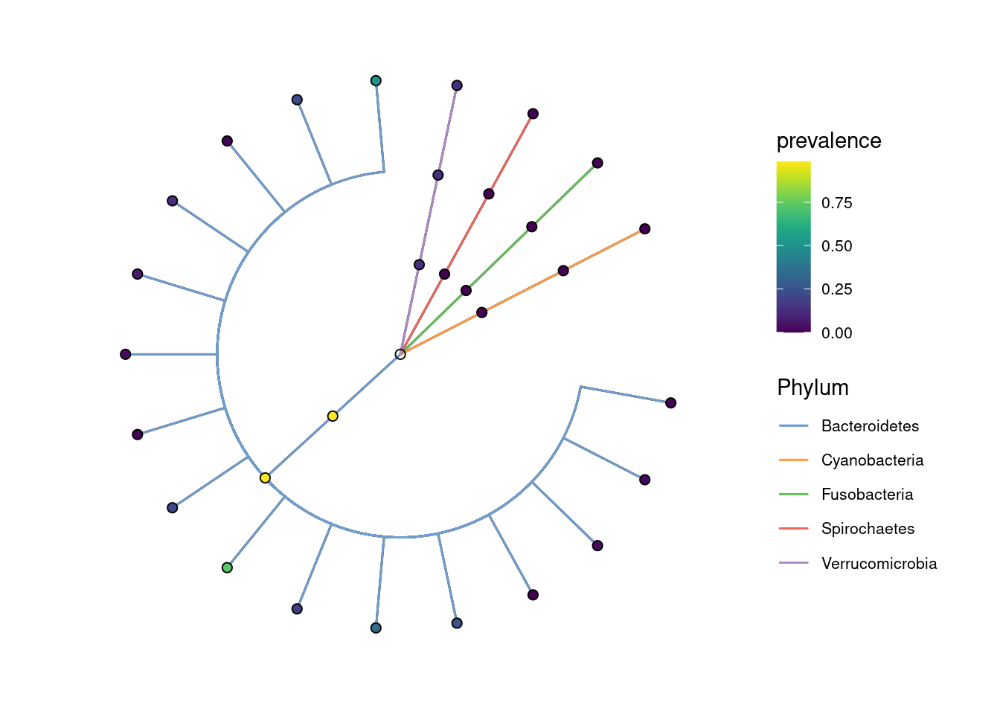
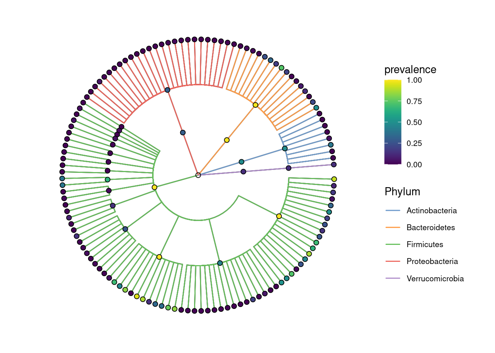
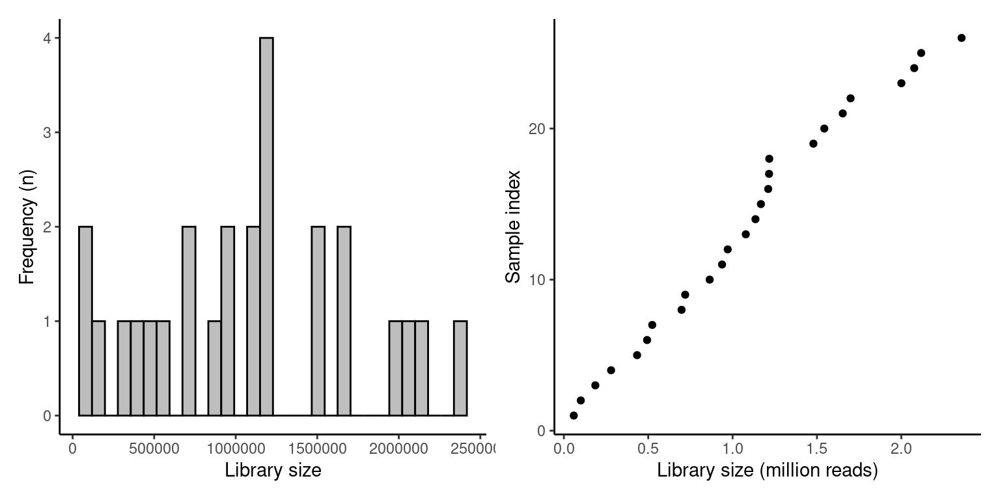
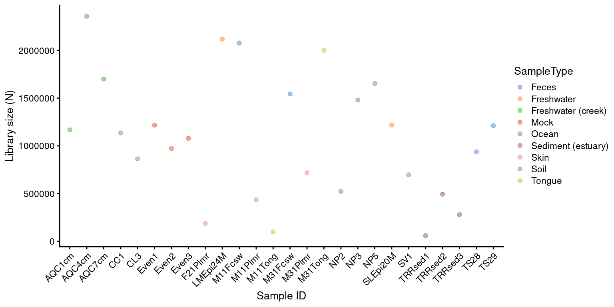
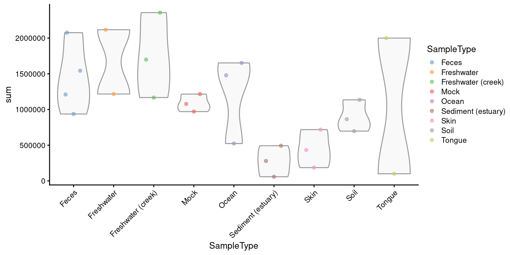

library(mia)6 Exploration and Quality Control
This chapter focuses on the quality control and exploration of microbiome data and establishes commonly used descriptive summaries. Familiarizing with the peculiarities of a given dataset is the essential basis for any data analysis and model building.
The dataset should not suffer from severe technical biases, and you should at least be aware of potential challenges, such as outliers, biases, unexpected patterns and so forth. Standard summaries and visualizations can help, and the rest comes with experience. The exploration and quality control can be iterative processes.
6.1 Abundance
Abundance visualization is an important data exploration approach. miaViz offers the function plotAbundanceDensity to plot the most abundant taxa with several options.
Next, a few demonstrations are shown, using the [@Lahti2014] dataset. A Jitter plot based on relative abundance data, similar to the one presented at [@Salosensaari2021] supplementary figure 1, could be visualized as follows:
# Load example data
library(miaTime)
library(miaViz)
data(hitchip1006)
tse <- hitchip1006
# Add relative abundances
tse <- transformAssay(tse, MARGIN = "samples", method = "relabundance")
# Use argument names
# assay.type / assay.type / assay.type
# depending on the mia package version
plotAbundanceDensity(tse, layout = "jitter", assay.type = "relabundance",
n = 40, point_size=1, point_shape=19, point_alpha=0.1) +
scale_x_log10(label=scales::percent)
The relative abundance values for the top-5 taxonomic features can be visualized as a density plot over a log scaled axis, with “nationality” indicated by colors:
plotAbundanceDensity(tse, layout = "density", assay.type = "relabundance",
n = 5, colour_by="nationality", point_alpha=1/10) +
scale_x_log10()
6.2 Prevalence
Prevalence quantifies the frequency of samples where certain microbes were detected (above a given detection threshold). The prevalence can be given as sample size (N) or percentage (unit interval).
Investigating prevalence allows you either to focus on changes which pertain to the majority of the samples, or identify rare microbes, which may be conditionally abundant in a small number of samples.
The population prevalence (frequency) at a 1% relative abundance threshold (detection = 1/100 and as_relative = TRUE), can look like this.
head(getPrevalence(tse, detection = 1/100, sort = TRUE, as_relative = TRUE))Faecalibacterium prausnitzii et rel. Ruminococcus obeum et rel.
0.9522 0.9140
Oscillospira guillermondii et rel. Clostridium symbiosum et rel.
0.8801 0.8714
Subdoligranulum variable at rel. Clostridium orbiscindens et rel.
0.8358 0.8315 The function arguments detection and as_relative can also be used to access, how many samples do pass a threshold for raw counts. Here, the population prevalence (frequency) at the absolute abundance threshold (as_relative = FALSE) at read count 1 (detection = 1) is accessed.
head(getPrevalence(tse, detection = 1, sort = TRUE, assay.type = "counts",
as_relative = FALSE)) Uncultured Mollicutes Uncultured Clostridiales II
1 1
Uncultured Clostridiales I Tannerella et rel.
1 1
Sutterella wadsworthia et rel. Subdoligranulum variable at rel.
1 1 If the output should be used for subsetting or storing the data in the rowData, set sort = FALSE.
6.2.1 Prevalence analysis
To investigate microbiome prevalence at a selected taxonomic level, two approaches are available.
First the data can be agglomerated to the taxonomic level and getPrevalence applied on the resulting object.
# Agglomerate taxa abundances to Phylum level, and add the new table
# to the altExp slot
altExp(tse,"Phylum") <- mergeFeaturesByRank(tse, "Phylum")
# Check prevalence for the Phylum abundance table from the altExp slot
head(getPrevalence(altExp(tse,"Phylum"), detection = 1/100, sort = TRUE,
assay.type = "counts", as_relative = TRUE)) Firmicutes Bacteroidetes Actinobacteria Proteobacteria Verrucomicrobia
1.0000000 0.9852302 0.4821894 0.2988705 0.1277150
Cyanobacteria
0.0008688 Alternatively, the rank argument could be set to perform the agglomeration on the fly.
head(getPrevalence(tse, rank = "Phylum", detection = 1/100, sort = TRUE,
assay.type = "counts", as_relative = TRUE)) Firmicutes Bacteroidetes Actinobacteria Proteobacteria Verrucomicrobia
1.0000000 0.9852302 0.4821894 0.2988705 0.1277150
Cyanobacteria
0.0008688 Note that, by default, na.rm = TRUE is used for agglomeration in getPrevalence, whereas the default for mergeFeaturesByRank is FALSE to prevent accidental data loss.
If you only need the names of the prevalent taxa, getPrevalentFeatures is available. This returns the taxa that exceed the given prevalence and detection thresholds.
getPrevalentFeatures(tse, detection = 0, prevalence = 50/100)
prev <- getPrevalentFeatures(tse, detection = 0, prevalence = 50/100,
rank = "Phylum", sort = TRUE)
prevNote that the detection and prevalence thresholds are not the same, since detection can be applied to relative counts or absolute counts depending on whether as_relative is set TRUE or FALSE
The function ‘getPrevalentAbundance’ can be used to check the total relative abundance of the prevalent taxa (between 0 and 1).
6.2.2 Rare taxa
Related functions are available for the analysis of rare taxa (rareMembers; rareAbundance; lowAbundance, getRareFeatures, subsetByRareFeatures).
6.2.3 Plotting prevalence
To plot the prevalence, add the prevalence of each taxon to rowData. Here, we are analysing the Phylum level abundances, which are stored in the altExp slot.
rowData(altExp(tse,"Phylum"))$prevalence <-
getPrevalence(altExp(tse,"Phylum"), detection = 1/100, sort = FALSE,
assay.type = "counts", as_relative = TRUE)The prevalences can then be plotted using the plotting functions from the scater package.
library(scater)
plotRowData(altExp(tse,"Phylum"), "prevalence", colour_by = "Phylum")
The prevalence can also be visualized on the taxonomic tree with the miaViz package.
altExps(tse) <- splitByRanks(tse)
altExps(tse) <-
lapply(altExps(tse),
function(y){
rowData(y)$prevalence <-
getPrevalence(y, detection = 1/100, sort = FALSE,
assay.type = "counts", as_relative = TRUE)
y
})
top_phyla <- getTopFeatures(altExp(tse,"Phylum"),
method="prevalence",
top=5L,
assay.type="counts")
top_phyla_mean <- getTopFeatures(altExp(tse,"Phylum"),
method="mean",
top=5L,
assay.type="counts")
x <- unsplitByRanks(tse, ranks = taxonomyRanks(tse)[1:6])
x <- addTaxonomyTree(x)After some preparation, the data is assembled and can be plotted with plotRowTree.
library(miaViz)
plotRowTree(x[rowData(x)$Phylum %in% top_phyla,],
edge_colour_by = "Phylum",
tip_colour_by = "prevalence",
node_colour_by = "prevalence")
plotRowTree(x[rowData(x)$Phylum %in% top_phyla_mean,],
edge_colour_by = "Phylum",
tip_colour_by = "prevalence",
node_colour_by = "prevalence")
6.3 Quality control
Next, let us load the GlobalPatterns dataset to illustrate standard microbiome data summaries.
library(mia)
data("GlobalPatterns", package="mia")
tse <- GlobalPatterns 6.3.1 Top taxa
The getTopFeatures identifies top taxa in the data.
# Pick the top taxa
top_features <- getTopFeatures(tse, method="median", top=10)
# Check the information for these
rowData(tse)[top_features, taxonomyRanks(tse)]DataFrame with 10 rows and 7 columns
Kingdom Phylum Class Order
<character> <character> <character> <character>
549656 Bacteria Cyanobacteria Chloroplast Stramenopiles
331820 Bacteria Bacteroidetes Bacteroidia Bacteroidales
317182 Bacteria Cyanobacteria Chloroplast Stramenopiles
94166 Bacteria Proteobacteria Gammaproteobacteria Pasteurellales
279599 Bacteria Cyanobacteria Nostocophycideae Nostocales
158660 Bacteria Bacteroidetes Bacteroidia Bacteroidales
329744 Bacteria Actinobacteria Actinobacteria Actinomycetales
326977 Bacteria Actinobacteria Actinobacteria Bifidobacteriales
248140 Bacteria Bacteroidetes Bacteroidia Bacteroidales
550960 Bacteria Proteobacteria Gammaproteobacteria Enterobacteriales
Family Genus Species
<character> <character> <character>
549656 NA NA NA
331820 Bacteroidaceae Bacteroides NA
317182 NA NA NA
94166 Pasteurellaceae Haemophilus Haemophilusparainflu..
279599 Nostocaceae Dolichospermum NA
158660 Bacteroidaceae Bacteroides NA
329744 ACK-M1 NA NA
326977 Bifidobacteriaceae Bifidobacterium Bifidobacteriumadole..
248140 Bacteroidaceae Bacteroides Bacteroidescaccae
550960 Enterobacteriaceae Providencia NA6.3.2 Library size / read count
The total counts/sample can be calculated using perCellQCMetrics/addPerCellQC from the scater package. The former one just calculates the values, whereas the latter one directly adds them to colData.
library(scater)
perCellQCMetrics(tse)DataFrame with 26 rows and 3 columns
sum detected total
<numeric> <numeric> <numeric>
CL3 864077 6964 864077
CC1 1135457 7679 1135457
SV1 697509 5729 697509
M31Fcsw 1543451 2667 1543451
M11Fcsw 2076476 2574 2076476
... ... ... ...
TS28 937466 2679 937466
TS29 1211071 2629 1211071
Even1 1216137 4213 1216137
Even2 971073 3130 971073
Even3 1078241 2776 1078241tse <- addPerCellQC(tse)
colData(tse)DataFrame with 26 rows and 10 columns
X.SampleID Primer Final_Barcode Barcode_truncated_plus_T
<factor> <factor> <factor> <factor>
CL3 CL3 ILBC_01 AACGCA TGCGTT
CC1 CC1 ILBC_02 AACTCG CGAGTT
SV1 SV1 ILBC_03 AACTGT ACAGTT
M31Fcsw M31Fcsw ILBC_04 AAGAGA TCTCTT
M11Fcsw M11Fcsw ILBC_05 AAGCTG CAGCTT
... ... ... ... ...
TS28 TS28 ILBC_25 ACCAGA TCTGGT
TS29 TS29 ILBC_26 ACCAGC GCTGGT
Even1 Even1 ILBC_27 ACCGCA TGCGGT
Even2 Even2 ILBC_28 ACCTCG CGAGGT
Even3 Even3 ILBC_29 ACCTGT ACAGGT
Barcode_full_length SampleType
<factor> <factor>
CL3 CTAGCGTGCGT Soil
CC1 CATCGACGAGT Soil
SV1 GTACGCACAGT Soil
M31Fcsw TCGACATCTCT Feces
M11Fcsw CGACTGCAGCT Feces
... ... ...
TS28 GCATCGTCTGG Feces
TS29 CTAGTCGCTGG Feces
Even1 TGACTCTGCGG Mock
Even2 TCTGATCGAGG Mock
Even3 AGAGAGACAGG Mock
Description sum detected
<factor> <numeric> <numeric>
CL3 Calhoun South Carolina Pine soil, pH 4.9 864077 6964
CC1 Cedar Creek Minnesota, grassland, pH 6.1 1135457 7679
SV1 Sevilleta new Mexico, desert scrub, pH 8.3 697509 5729
M31Fcsw M3, Day 1, fecal swab, whole body study 1543451 2667
M11Fcsw M1, Day 1, fecal swab, whole body study 2076476 2574
... ... ... ...
TS28 Twin #1 937466 2679
TS29 Twin #2 1211071 2629
Even1 Even1 1216137 4213
Even2 Even2 971073 3130
Even3 Even3 1078241 2776
total
<numeric>
CL3 864077
CC1 1135457
SV1 697509
M31Fcsw 1543451
M11Fcsw 2076476
... ...
TS28 937466
TS29 1211071
Even1 1216137
Even2 971073
Even3 1078241The distribution of calculated library sizes can be visualized as a histogram (left), or by sorting the samples by library size (right).
library(ggplot2)
p1 <- ggplot(as.data.frame(colData(tse))) +
geom_histogram(aes(x = sum), color = "black", fill = "gray", bins = 30) +
labs(x = "Library size", y = "Frequency (n)") +
# scale_x_log10(breaks = scales::trans_breaks("log10", function(x) 10^x),
# labels = scales::trans_format("log10", scales::math_format(10^.x))) +
theme_bw() +
theme(panel.grid.major = element_blank(), # Removes the grid
panel.grid.minor = element_blank(),
panel.border = element_blank(),
panel.background = element_blank(),
axis.line = element_line(colour = "black")) # Adds y-axis
library(dplyr)
df <- as.data.frame(colData(tse)) %>%
arrange(sum) %>%
mutate(index = 1:n())
p2 <- ggplot(df, aes(y = index, x = sum/1e6)) +
geom_point() +
labs(x = "Library size (million reads)", y = "Sample index") +
theme_bw() +
theme(panel.grid.major = element_blank(), # Removes the grid
panel.grid.minor = element_blank(),
panel.border = element_blank(),
panel.background = element_blank(),
axis.line = element_line(colour = "black")) # Adds y-axis
library(patchwork)
p1 + p2
Library sizes other variables from colData can be visualized by using specified function called plotColData.
library(ggplot2)
# Sort samples by read count, order the factor levels, and store back to tse as DataFrame
# TODO: plotColData could include an option for sorting samples based on colData variables
colData(tse) <- as.data.frame(colData(tse)) %>%
arrange(X.SampleID) %>%
mutate(X.SampleID = factor(X.SampleID, levels=X.SampleID)) %>%
DataFrame
plotColData(tse,"sum","X.SampleID", colour_by = "SampleType") +
theme(axis.text.x = element_text(angle = 45, hjust=1)) +
labs(y = "Library size (N)", x = "Sample ID") 
plotColData(tse,"sum","SampleType", colour_by = "SampleType") +
theme(axis.text.x = element_text(angle = 45, hjust=1))
In addition, data can be rarefied with subsampleCounts, which normalises the samples to an equal number of reads. However, this practice has been discouraged for the analysis of differentially abundant microorganisms (see [@mcmurdie2014waste]).
6.3.3 Contaminant sequences
Samples might be contaminated with exogenous sequences. The impact of each contaminant can be estimated based on their frequencies and concentrations across the samples.
The following decontam functions are based on the [@davis2018simple] and support such functionality:
isContaminant,isNotContaminantaddContaminantQC,addNotContaminantQC